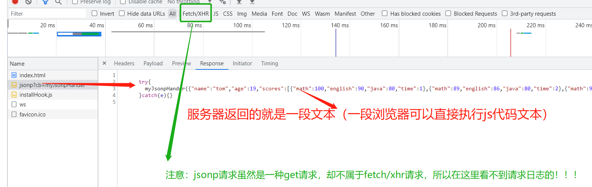

jsonp是一种传统的能够跨域请求服务端数据的一种前后端通信方式（其实现在的网页也还在使用这种技术）。
Jsonp原理简介
1.利用的就是script标签src属性没有跨域限制来实现的（Ajax请求是受到浏览器跨域限制的，需要设置服务器设置响应头CORS来
解决跨域，但script、img等标签的src属性天然就能发get请求，但这种请求并不是普通的ajax请求）
（1） script的特性：会将引用的外部文件的文本内容当做js代码来进行解析
（2） 发送get请求将远程服务器的资源添（往往是一段JavaScript代码）加载到浏览器进行解析并执行
（3） json的格式：属性名必须有冒号，例如{“score”：99}
（4） jsonp==json+padding

jsonp方式服务器返回其实就是一段js文本
2.执行的过程
（1）前、端约定好一个解析函数，例如 function myJsonpHander(data){ console.log(data) }
（2）通过query的形式包装script的请求参数，并且声明执行函数如http://127.0.0.1:8088/jsonp?cb=myJsonpHander
（3）后端获取到前端声明的执行函数（myJsonpHander），把数据以json的格式拼接成函数调用的方式，最终把这个拼接好的字符串发送给前端
（4）前端在script标签返回资源的时候就回执行服务端返回那段js字符串代码，并以回调函数的方式拿到返回的数据了
前端通过script标签发送可以跨域的get请求
服务端获取到前端的参数，基于此参数拼接json数据形成一个函数调用格式的字符串发给前端
3.优缺点
（1）缺点：只能进行get请求，优点：兼容性好，在一些老的浏览器中也可以运行
代码
服务器代码
1
2
3
4
5
6
7
8
9
10
11
12
13
14
15
16
17
18
19
20
21
22
23
24
25
26
27
28
29
30
31
32
33
34
35
36
37
38
39
40
41
| const http = require('http');
const fs = require("fs");
const url = require('url');
http.createServer(function (request, response) {
let parsedUrl = url.parse(request.url, true)
console.log(parsedUrl)
const {search, query, pathname} = parsedUrl
if(pathname === "/favicon.ico"){
fs.readFile("./favicon.ico",(err, dataStr)=>{
console.log(dataStr)
response.writeHead(200, {'Content-Type': 'image/x-icon'});
return response.end(dataStr);
})
}else if(pathname === "/jsonp"){
if(query.cb === "myJsonpHander"){
const obj = {
name:'tom',
age:19,
scores:[
{math:100, english:90, java:80, time:1},
{math:89, english:86, java:80, time:2},
{math:96, english:40, java:90, time:3},]
}
const cbStr = `
try{
myJsonpHander(${JSON.stringify(obj)});
}catch(e){}
`
response.writeHead(200, {'Content-Type': 'text/plain'});
response.end(cbStr);
}
}else{
response.writeHead(200, {'Content-Type': 'text/plain'});
response.end('Hello World');
}
}).listen(8088);
console.log('Server running at http://127.0.0.1:8088/');
|
前端代码
1
2
3
4
5
6
7
8
9
10
11
12
13
14
15
16
17
18
| function myJsonpHander(data){
console.log(data)
}
<script src="http://127.0.0.1:8088/jsonp?cb=myJsonpHander"></script>
<script>
const data = {
"name":"tom",
"age":19,
"scores":
[
{"math":100,"english":90,"java":80,"time":1},
{"math":89,"english":86,"java":80,"time":2},
{"math":96,"english":40,"java":90,"time":3}
]
}
try{
myJsonpHander(data);
}catch(e){}
|
总结
注意：http请求有很多种，比如Windows自带的curl命令、linux自带的wget命令，以及各种语言自带的请求库（比如nodejs的http模块、java的HttpClient模块、python的requests模块等等各种计算机语言都提供了自己网络请求库）但这些http请求方式中，只有浏览器里面ajax请求和fetch请求才会受到同源策略的影响，导致浏览器认为是不安全的数据，从而把数据包给丢了（实际上服务器已经发送了数据，并且浏览器也收到了数据），显然只有浏览器的这种Ajax请求和fetch请求才有此问题，其他都不存在这个问题，浏览器的锅自然不能丢到服务器身上了，在前端开发中为了解决这个跨域问题，官方推荐的做法都是CORS（Cross-Origin Resource Sharing跨域资源共享），在服务器上设置一系列的响应头来告诉浏览器这是安全的资源，让浏览器“放心”的接受这数据。（如果是客户端发送http请求自然不用服务器这样多此一举了），这种问题也只有在浏览器中才会出现，这种解决方案却需要服务端配合（当然前端自己也可以搭建代理服务器来解决跨域，但本质来讲还是在代理服务器上做了cors）；所以这种方案最终还是离不开服务器，有没有不需要修改服务器的方案呢？jsonp就具有天然支持跨域获取服务器资源的特点。jsonp方法也还是需要和服务器配合沟通协商好一个标识以及传输的数据格式，所以无论怎样，沟通配合还是少不了的。
jsonp由于只能发送get请求，而且较为繁琐，相对如今的请求库而言早已经失去了优势，但它其实仍然运行在现代web网页中，即使现在如此纷繁复杂的网页已经抛弃了很多古老的技术，但jsonp仍然可以见到其身影，比如经典的pv、uv统计库不蒜子，简洁的几段代码就可以统计网站的访问量和访问人数，其背后就是通过构建一个jsonp请求去向服务器拉取数据，展示到网页。